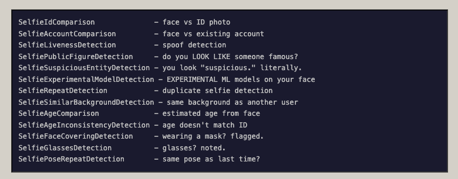

OpenAI 🤝 Persona 🤝 governo dos EUA
Uma pesquisadora de segurança analisando o sistema de verificação facial da OpenAI descobriu muito mais do que esperava sobre a vigilância do governo dos EUA.
Veja no canal:
- Antes de começar o roteiro: a gente meio que já sabia esse tipo de coisa, mas isso aqui são provas e está desenhando a situação mais claramente
Pesquisadores que investigam as verificações de idade do Discord afirmam ter descoberto um front-end exposto pertencente à Persona, o fornecedor de verificação de identidade utilizado pelo Discord. Isso revelou uma estrutura de vigilância e inteligência financeira muito mais abrangente do que uma simples ferramenta de “segurança para adolescentes”.
...
Para analisar essas digitalizações, a Discord utiliza a startup de verificação de identidade biométrica Persona Identities, Inc., uma empresa que oferece soluções Know Your Customer (KYC) e Anti-Money Laundering (AML) que se baseiam em verificações de identidade biométrica para estimar a idade do usuário.
...
Nesses arquivos, os pesquisadores encontraram detalhes sobre a extensa vigilância que o software Persona realiza sobre seus usuários. Além de verificar a idade deles, o software realiza 269 verificações distintas, executa reconhecimento facial em relação a listas de observação e pessoas politicamente expostas, filtra “mídia adversa” em 14 categorias (incluindo terrorismo e espionagem) e atribui pontuações de risco e similaridade.
A Persona coleta — e pode reter por até três anos — endereços IP, impressões digitais de navegadores e dispositivos, números de identificação governamentais, números de telefone, nomes, rostos, além de uma série de análises de “selfies”, como detecção de entidades suspeitas, detecção de repetição de poses e verificações de inconsistência de idade.
https://cybernews.com/privacy/persona-leak-exposes-global-surveillance-capabilities/
- Leiam o relatório completo:
https://vmfunc.re/blog/persona
- Segundo a postagem, aqui estão alguns dos pontos que o serviço verifica para cada cadastro de foto:

- Outra evidência interessante encontrada é um endpoint de API da Persona com o mesmo nome de um sistema de vigilância contratado pela ICE:
The researchers noticed that the subdomain “onyx.withpersona-gov.com” bears the same name as ICE's $4.2 million AI surveillance tool ONYX, though Song assured the resemblance is coincidental, and the name was taken from a coworker's favorite Pokémon.
- Uma explicação desse sistema segundo a EFF:
O ICE também firmou contratos com outras empresas de monitoramento de mídias sociais e análise de IA, como um contrato de US$ 4,2 milhões com a empresa Fivecast para a ferramenta de vigilância de mídias sociais e análise de IA ONYX. De acordo com a Fivecast, o ONYX pode realizar a “coleta automatizada, contínua e direcionada de dados multimídia” de todos os principais “fluxos de notícias, mecanismos de busca, mídias sociais, marketplaces, dark web, etc.”. O ONYX pode construir o que chama de “pegadas digitais” a partir de dados biográficos e conjuntos de dados selecionados que abrangem diversas plataformas, além de “rastrear mudanças de sentimento e emoção” e identificar o nível de risco associado a um indivíduo.
- Aqui tem um bom artigo sobre todos os aspectos da verificação da Persona:
https://thelocalstack.eu/posts/linkedin-identity-verification-privacy/
-
Nos lembra do Cloud Act que permite que o governo dos EUA pegue qualquer dado de qualquer empresa dos EUA... mesmo que esses dados estejam armazenados em outros países.
- Ouviu isso SERPRO? Eu não esqueci da parceria de vocês pra construção de infraestrutura """""soberana""""" com parcerias com empresas dos EUA
-
E aqui tem um usuário da OpenAI em Junho de 2025 reclamando que agora é preciso usar escaneamento facial para poder acessar os planos com modelos mais avançados
https://community.openai.com/t/openai-we-need-to-talk-about-org-verification/1284940
- OpenAI argumenta que eles precisam proteger a sua tecnologia de ser 'apropriada' por competidores (vejam o vídeo da Deepseek aqui no canal). Mas descobriu uma coisa muito interessante na documentação da Persona:
- Mostrando que os clientes da empresa podem receber o cadastro do governo de cada 'ID de verificação' com uma chamada de API
Por que escaneamento facial?
https://proton.me/blog/facial-recognition-technology
-
É mais fácil de entender isso expondo as mentiras sobre quais dados são gerados por esse processo. Todas plataformas dizem uma versão de:
Seus dados são armazenados apenas durante a verificação e a plataforma só recebe a confirmação (ou a sua idade)
-
Porém nossas fotos são transformadas em modelos de biometria facial, uma série de indicadores e flags e diversos formatos intermerdiários que são vinculados a nossos passaportes, redes sociais e etc...
-
O escaneamento facial é uma maneira de resolver 'identificação na internet', um problema importante, ao mesmo tempo que alimenta uma indústria de vigilância em massa, treinamento de IA e repressão governamental.
Mas é culpa do governo então?
-
Sim, eu não entendo por que ainda tem gente burra que acha que "colunismos defender estado forte"
-
O cerne da questão é que a internet, ou as 'redes sociais', como existem hoje são extremamente problemáticas e existe o clamor popular para solucionar esses problemas.
-
Só que uma visão mais crítica das big techs mostra como fake news, abuso sexual, vícios, discurso de ódio em grande parte são dinâmicas incentivadas pelas plataformas e que alimentam o seu lucro
-
A regulamentação focada simplesmente na responsabilidade individual das pessoas e fazendo isso por meio da agregação de dados pessoais e contratação dessas mesmas empresas é a armadilha perfeita
-
Não mexe no modelo das big techs e cria um novo mercado de vigilância mais potente ainda.
Conclusões e ações:
-
Algumas pessoas podem dizer que não existe mais privacidade e que os nossos dados estão espalhados por vários bancos de dados. O objetivo é não deixar mais fácil do que já é coletar e esquematizar esses dados
-
A lei do Brasil precisa exigir que plataformas que operam no Brasil usem um sistema de autenticação nacional e proibir o uso de plataformas de escaneamento facial atreladas aos EUA
- Todas elas compartilham esses dados com parceiros e o governo e eu tenho certeza que isso fere LGPD e um monte de coisas mais
- Vai juristas, nos ajudem!
-
Pessoalmente buscar sair dessas plataformas, não interagir com elas e não realizar o escaneamento facial de forma nenhuma
-
Ironicamente o 'big brother governo da China crédito social' hoje me dá acesso aos modelos da Deepseek de maneira aberta e mesmo pagando é só um cartão de crédito, tchau e bença. Pensem sobre isso.
Referências extras
https://www.eff.org/deeplinks/2026/01/ice-going-surveillance-shopping-spree
https://www.authoritarian-stack.info/
Exemplos de como usuários tem burlado verificação facial
https://sketchfab.com/tqyw/collections/human-face-08d97fa722cc41baa977fe4b16f825ae